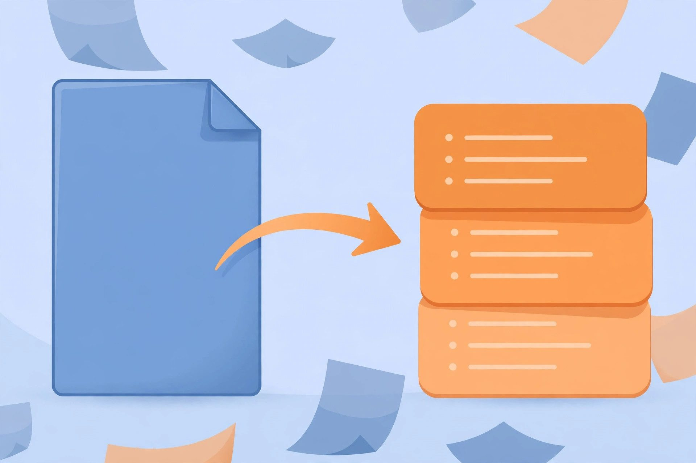

No-Sign-Up PDF Summarizers: 5 AI Tools Compared (2026)
Nobody has time to read a 60-page paper to find the three paragraphs that matter. AI PDF summarizers promise to do the skimming for you — but the good ones usually hide behind a "sign up for free" wall right when you upload. This guide compares 5 PDF summarizers whose free tiers are documented as usable without an account, so you can go from upload to summary without surrendering your email.

A note on method before we start: free tiers for AI tools change every few months, so this comparison is built from each tool's official pricing and documentation pages as of October 2026, not from a single afternoon of testing that would be stale by next quarter. Where a detail is ambiguous on the official site, it's flagged rather than guessed. If a tool suddenly demands login, its terms changed — the pattern below is what to look for, not a lifetime guarantee.
What to look for in a PDF summarizer
Four things decide whether a summarizer is actually useful or just a demo:
Page and file limits. The free tier might cap you at 10 pages, 50 pages, or a few documents per day. A 200-page thesis needs a different tool than a 12-page report. Check the cap before you upload.
Summary depth control. A one-paragraph overview and a section-by-section breakdown are different jobs. The better tools let you choose length, or better yet, let you ask follow-up questions about the document.
Chat with the document. Summarization is the entry point; the real power move is asking "what does section 4 conclude about X?" afterwards. Tools with document Q&A turn a static summary into a research assistant.
Privacy handling. You're uploading potentially sensitive documents to someone's server. Check the retention policy — reputable tools document how long files are kept and whether they're used for training.
1. ChatPDF — the original chat-with-PDF tool
ChatPDF essentially invented the "upload a PDF, ask it questions" category, and it remains the reference point. Upload a document, get an automatic summary, then interrogate the content in plain language.
No-sign-up access: ChatPDF documents a free tier usable without an account, with limits on pages per day and documents stored. The free tier is designed for casual use — a few documents, not a research library.
Best for: Students and professionals who want to ask specific questions about a paper rather than just get a generic summary. The Q&A is the product; the summary is the bonus.
Watch out for: Free-tier page limits mean long documents may need to be split or sampled. For a thesis-length PDF, check the current cap first.
2. Smallpdf — the PDF toolkit with AI inside
Smallpdf is a full PDF utility suite (compress, convert, merge, split) that added AI summarization on top. If you already use it for PDF chores, the summarizer is right there in the same tab.
No-sign-up access: Smallpdf's free tier allows limited daily use of its tools without an account, including the AI features. The documented pattern is a small number of free tasks per day before an account or plan is suggested.
Best for: People whose workflow is "receive messy PDF, make it useful" — compress it, summarize it, convert the summary, all in one place.
Watch out for: The daily free-task counter covers all Smallpdf tools combined, so heavy use of the converter eats into your summarizer allowance.
3. NoteGPT — the multi-format summarizer
NoteGPT started with YouTube video summaries and expanded to PDFs, documents, and web articles. Its strength is format flexibility: the same account-free flow handles a lecture recording transcript and a research paper.
No-sign-up access: NoteGPT documents free summarization without mandatory registration for its core features. Usage quotas for the free tier are published on its pricing page and apply per-day or per-month depending on the feature.
Best for: Students juggling mixed media — lecture videos one hour, PDF readings the next. One tool for both beats two half-remembered bookmarks.
Watch out for: As a generalist, its PDF-specific features (like page citations) may be thinner than tools built exclusively for documents.
4. Humata — the research-paper specialist
Humata targets academic and technical documents specifically, with features like cited answers that point back to the page and section they came from. For literature reviews, that traceability matters.
No-sign-up access: Humata's documented free tier allows a limited number of pages or questions without an account. The free allowance is explicitly positioned as an evaluation tier.
Best for: Researchers who need answers they can verify — "which page says that?" is a first-class question here, not an afterthought.
Watch out for: The free page count is modest by design. It's enough to test on a real paper, not enough to process a semester's reading list.
5. SciSpace — the academic copilot
SciSpace (formerly Typeset) wraps PDF reading in a full academic workflow: summaries, explanations of dense passages, and discovery of related papers. It's the closest thing here to a research assistant rather than a summarization utility.
No-sign-up access: SciSpace documents a free tier with limited AI actions usable without a paid plan; the entry-level experience is accessible without mandatory account creation for basic reading features.
Best for: Anyone doing literature reviews who wants the summary to be a starting point into related work, not a dead end.
Watch out for: The richest features (deep literature discovery, extensive AI actions) sit above the free tier. Evaluate whether the free reading experience alone justifies the tab.
Side-by-side comparison
| Tool | Account needed? | Free limits | Standout feature |
|---|---|---|---|
| ChatPDF | No (basic) | Pages/day cap | Document Q&A |
| Smallpdf | No (basic) | Tasks/day across tools | Full PDF toolkit |
| NoteGPT | No | Published quotas | Video + PDF + web |
| Humata | No (trial) | Small page allowance | Cited answers |
| SciSpace | No (basic) | Limited AI actions | Academic workflow |
"Basic" means the core upload-and-summarize flow is documented as account-free; unlimited pages, history, and API access are where accounts typically appear.
Which one should you actually use?
Quick summary of a single paper: ChatPDF or NoteGPT. Upload, read the auto-summary, done.
Interrogating a long document: ChatPDF for general documents, Humata when you need page-level citations you can check.
PDF is just one of many formats: NoteGPT — the same free tier covers videos and articles, which matters when your reading list isn't all PDFs.
Turning the summary into a presentation: Summarize with any tool above, then make your slides visual — our free background remover roundup covers account-free tools for cutting out product shots and diagrams to drop into your deck.
Serious literature review: SciSpace's free tier for discovery, Humata for verification. Neither free tier covers a full review alone — budget for that reality.
FAQ
Are my uploaded PDFs used to train AI models?
Policies vary by tool and change over time. The reputable ones publish a data-retention and training policy — look for explicit statements that uploads are deleted after a window (commonly 30 days or less) and excluded from training. If a tool won't say, assume the worst and don't upload anything sensitive.
Can these tools handle scanned PDFs?
Only if the scan has a text layer (OCR'd). A flat image of pages with no embedded text gives the AI nothing to read. Some toolkits (Smallpdf among them) include OCR as a separate step — run that first, then summarize.
How accurate are AI summaries of technical papers?
Good at structure, risky on details. AI summarizers reliably extract what a paper claims; they're less reliable on methodology nuances, statistical caveats, and anything the authors hedged. Treat the summary as a map, then read the sections that matter for your purpose. Never cite a paper you haven't at least skimmed yourself.
Do I really need a PDF-specific tool, or will a chatbot do?
For short documents, pasting text into any capable chatbot works fine. PDF-specific tools earn their keep on long documents: they handle the file parsing, preserve section structure, and — in the better ones — cite the page each claim came from. Once a PDF passes ~30 pages, the dedicated tool saves enough fiddling to be worth the extra tab.
What if my document exceeds the free page limit?
Split it into chapters and summarize each separately, then ask a chatbot to synthesize the section summaries. It's clunky but works — and for general AI assistance without accounts, our roundup of 12 no-signup AI agents includes chatbots that can handle the synthesis step.